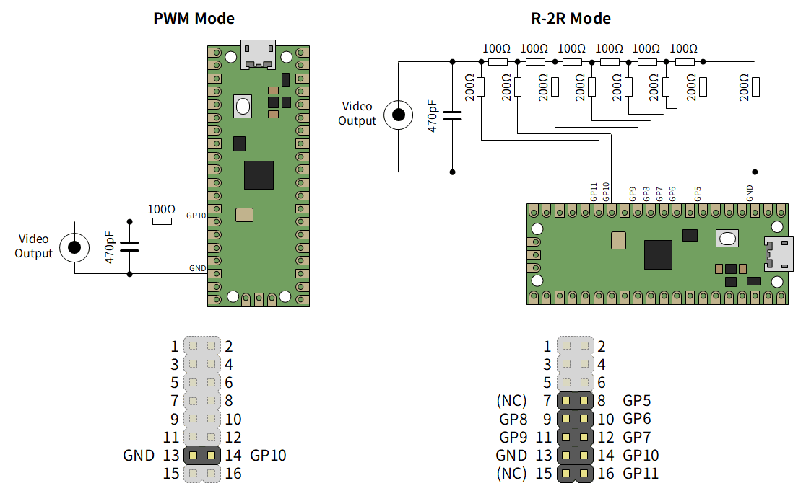
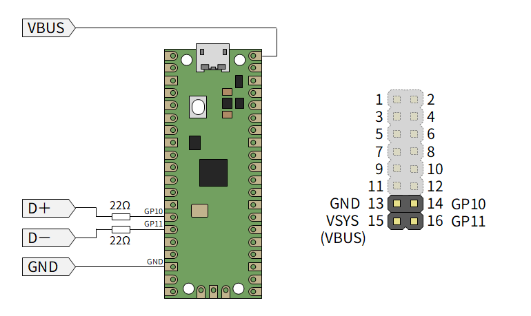

LcdTap-Pico2 Universal: Alternative Output Interface
Composite Video Output
See also: アナログテレビを I2C/SPI ディスプレイとして使う
LcdTap-Pico2 Universal also supports composite video output. Some external circuitry is required to use composite video output. The PWM method is low quality but requires simple external circuitry. The R-2R method is high quality but requires somewhat more complex external circuitry.
Composite output cannot be used simultaneously with parallel bus mode. Also, the R-2R method cannot be used simultaneously with I2C bus mode.

The boards sold at BOOTH have 47Ω damping resistors inserted in series on the GPIO pins, so please subtract that value from the resistance values.
To switch to composite video output, connect the external circuitry as described above, and set the Output Interface to NTSC or PAL in the Configuration menu, then select the Video DAC Type (PWM or R-2R).
If video output does not appear and OSD control becomes unavailable, please use LcdTap Monitor to correct output interface, or reset LcdTap while pressing the left key to initialize the settings.
DisplayLink Output
LcdTap-Pico2 Universal supports DisplayLink output (powered by Pico_USB_Disp). Only DisplayLink DL-1x0 / DL-1x5 generation adapters are supported.

As shown in the diagram above, connect the USB connector of the DisplayLink adapter to GPIO10 (D+) and GPIO11 (D-). The boards sold at BOOTH have 47Ω damping resistors inserted in series on each GPIO pin, so 22Ω is not required.
To switch to DisplayLink output, connect the DisplayLink adapter to GPIO10 (D+) and GPIO11 (D-) of Raspberry Pi Pico 2, and set the Output Interface to DisplayLink in the Configuration menu.
The output resolution can be selected using the CFG_OUT_RES_SEL switch. When the switch is off, it is 1280x720@60Hz, and when on, it is 1920x1080@60Hz. A reset is required after switching.